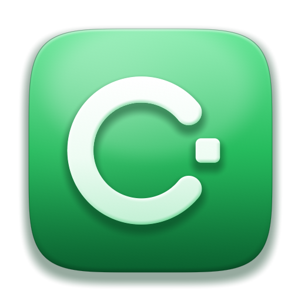
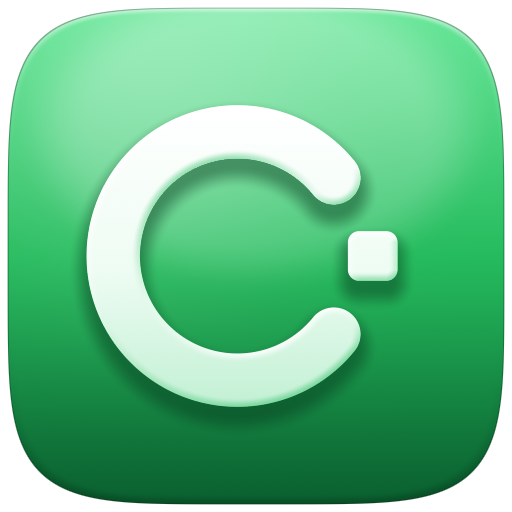
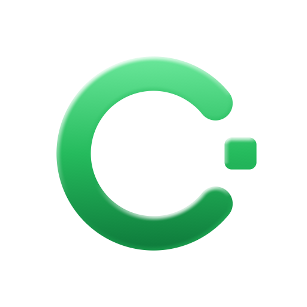
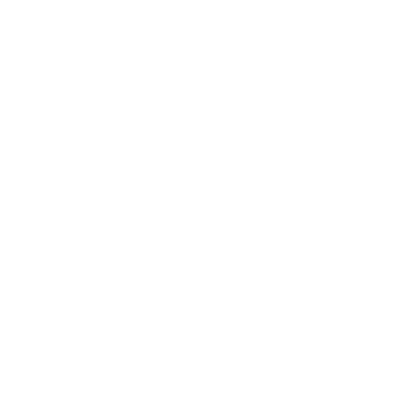
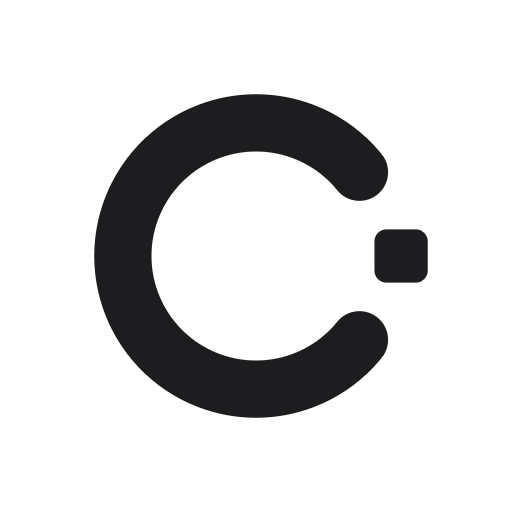
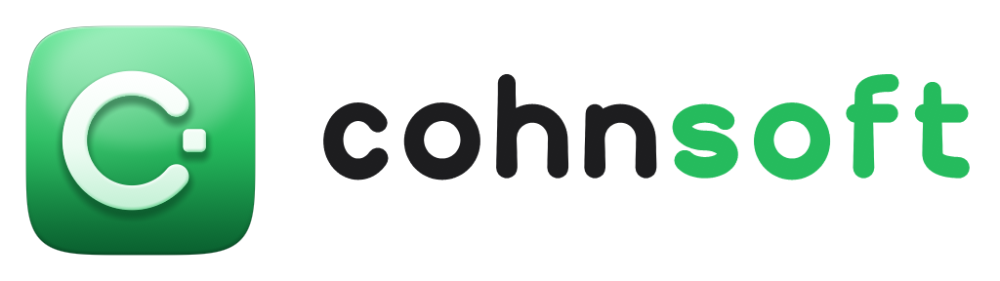
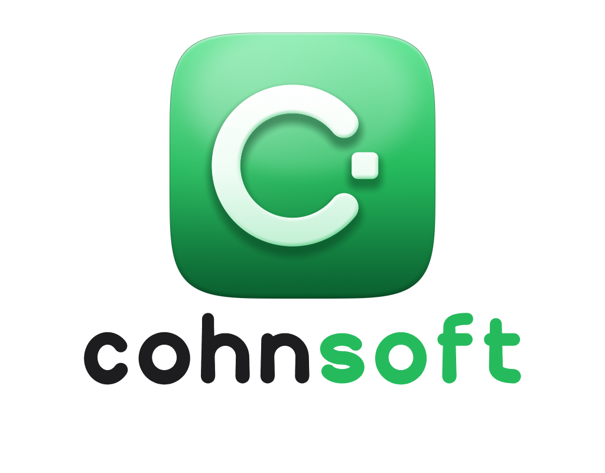
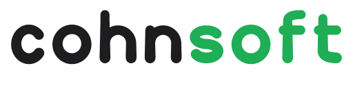
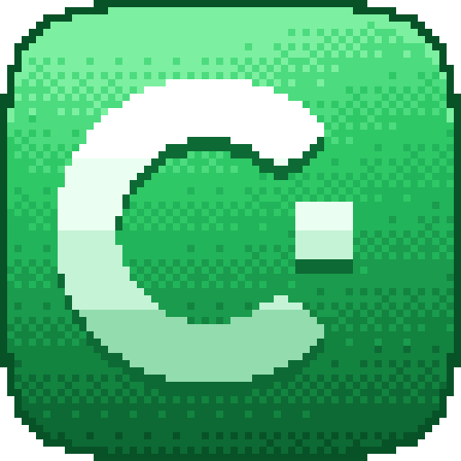

Logo
The mark is a lit white C holding a single bit, on a green tile. It reads at 16 pixels and at the size of a building. The wordmark is set in Cohn Sans, with "soft" in Cohnsoft Green.









Colour
One green. Everything else is a quiet neutral. Logo green is for the logo and for large display type only; use Green 700 for green text on white.
#e9fbf0#c8f6d9#9cf0bb#6ae79a#3fd477#25bb5d#1a9b4d#0a7a37#0b6a34#05361b#ffffff#f2f2f7#636366#1d1d1f#1c1c1e#2c2c2e| Pair | Contrast | |
|---|---|---|
| Ink on Paper | 16.83:1 | AAA |
| Graphite on Paper | 5.99:1 | AA |
| Green 700 on Paper (text) | 5.45:1 | AA |
| White on Green 700 | 5.45:1 | AA |
| White on Green 500 (large only) | 2.52:1 | decorative |
| Green 400 on Night | 8.83:1 | AAA |
| Paper on Night | 15.63:1 | AAA |
| Night on Green 400 (buttons, dark) | 8.86:1 | AAA |
Typeface: Cohn Sans
An original typeface: the clean, open feel of a modern system sans, with the reading aids of dyslexia-friendly faces. Letters that are easy to confuse look different (b d p q, I l 1, O 0), the bottoms are drawn heavier so each letter sits on the line, apertures are open and spacing is generous.
cohnsoft
ABCDEFGHIJKLMNOPQRSTUVWXYZ
abcdefghijklmnopqrstuvwxyz
0123456789 bdpq Il1 O0
Bold: Make something wonderful.
The quick brown fox jumps over the lazy dog. Software should be calm, readable and kind to the person using it. Files: Regular · Bold (also .ttf).
Golden Gate design system
Frosted bars over a green wallpaper, quiet surfaces, soft shadows, one tint. css/goldengate.css carries the tokens and components; the sample below is built from them.
Settings
Make it yours
Sheets are translucent, with a lit top edge and a long soft shadow.
Downloads
Everything here is in this repository.